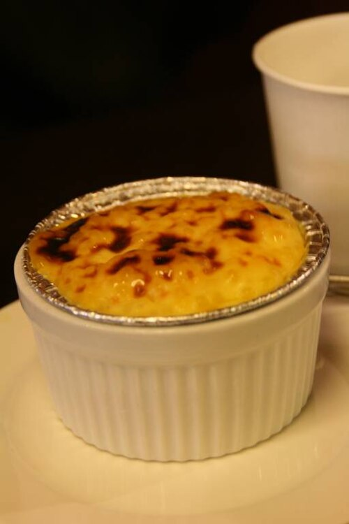

Egg Custard Recipe

This recipe will teach you how to make your very own delicious egg custard!
This is an easy recipe anyone can master. Prep time is only 10 minutes,
and will take around 1 hour to cook, and you should have enough custard for
6 servings.
Ingredients
- 2 cups milk
- 2 large eggs, beaten
- ½ cup white sugar
- 1 pinch salt
- 1 dash vanilla extract
Steps
- Preheat the oven to 165 degrees C.
- Whisk milk, eggs, salt, and vanilla together in a bowl until
completely mixed together. Pour mixture into 6 custard cups.
- Place cups in a baking pan tray and fill the pan with enough hot
water to reach halfway up the sides of the custard cups.
- Bake in the oven until a knife inserted into the custard comes out clean,
and the custards are set. Cool completely before serving.
Home